Kesenian Tari
Seni tari adalah ekspresi budaya yang menggabungkan gerakan tubuh, ritme, dan ekspresi emosional untuk menyampaikan cerita, ide, atau perasaan. Sebagai salah satu bentuk seni yang paling kuno dan universal, seni tari telah menjadi bagian integral dari berbagai budaya di seluruh dunia, memainkan peran penting dalam merayakan tradisi, menghormati leluhur, dan memperkuat identitas masyarakat.
Dalam seni tari, setiap gerakan memiliki makna yang mendalam, sering kali menggambarkan cerita mitologis, kehidupan sehari-hari, atau peristiwa penting dalam sejarah. Baik itu tarian tradisional yang diwariskan dari generasi ke generasi maupun karya-karya kontemporer yang inovatif, seni tari memungkinkan penari untuk mengekspresikan diri mereka dengan cara yang unik dan penuh makna.
Gallery
Berikut adalah foto dan video dari UKM Kesenian Tari
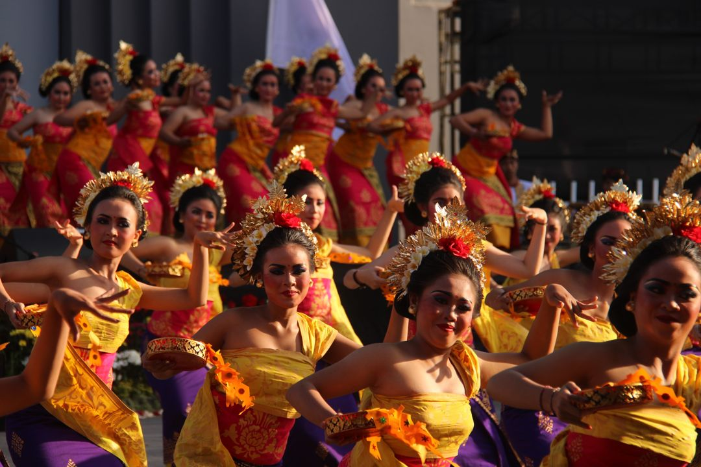 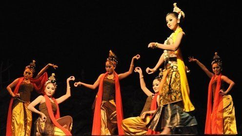
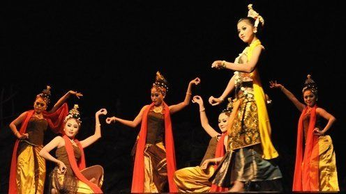
Pencak Silat
Pencak Silat adalah seni bela diri tradisional yang memiliki akar kuat dalam budaya Indonesia dan Asia Tenggara. Lebih dari sekadar keterampilan fisik untuk pertahanan diri, Pencak Silat juga merupakan warisan budaya yang kaya, mencakup beragam aspek seperti gerakan, musik, filosofi, dan nilai-nilai kehidupan.
Dalam praktiknya, Pencak Silat menggabungkan teknik-teknik serangan, pertahanan, dan gerakan tubuh yang elegan dan efektif. Dengan beragam gaya dan aliran yang berbeda-beda di seluruh wilayah Indonesia, setiap gerakan memiliki makna dan tujuan yang dalam, sering kali terkait dengan kepercayaan, mitologi, atau budaya lokal.
Gallery
Berikut adalah foto dan video dari UKM Pencak Silat
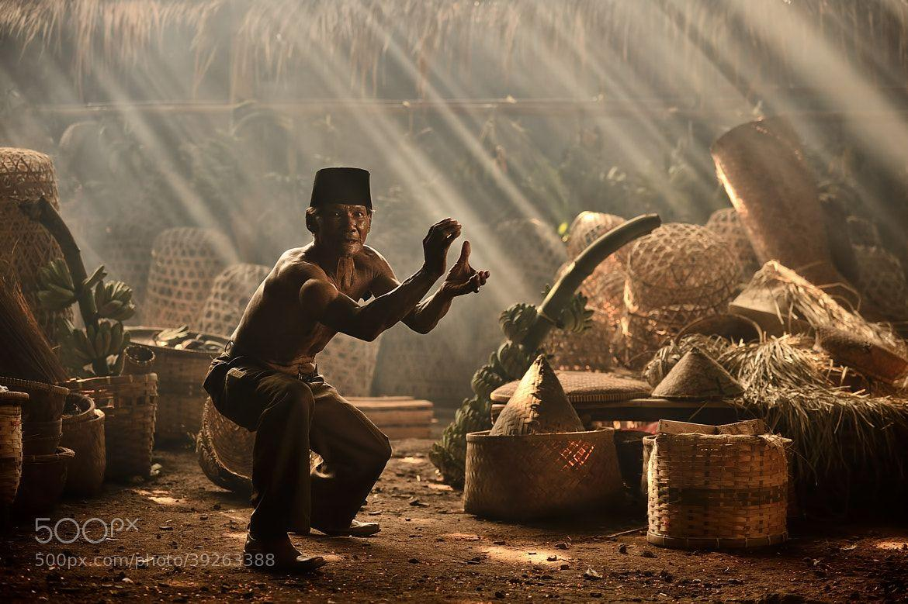 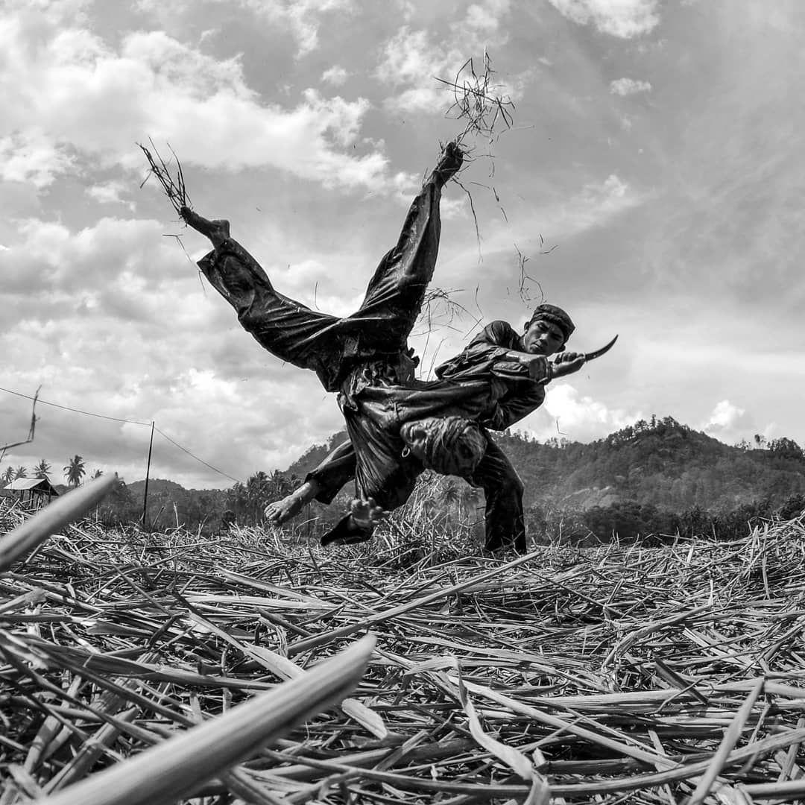 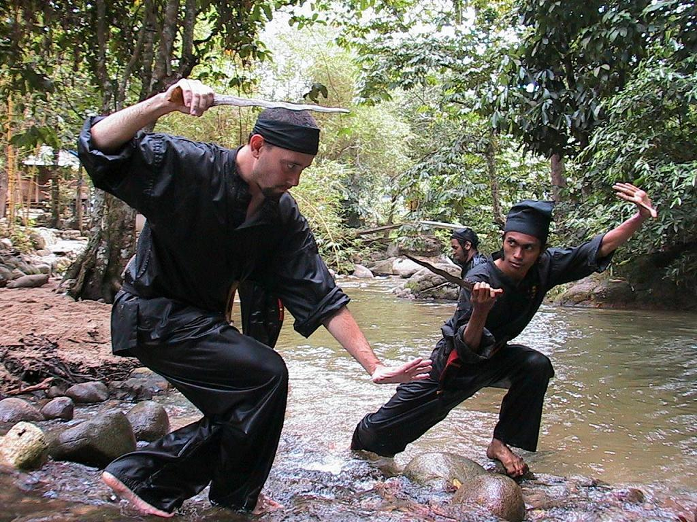Basket
Basketball, atau yang sering disebut bola basket, adalah olahraga tim yang populer dimainkan secara global, terkenal dengan aksinya yang cepat dan permainannya yang dinamis. Olahraga ini melibatkan dua tim dengan lima pemain masing-masing, yang bertujuan mencetak poin dengan melempar bola basket melalui ring lawan sambil mencegah mereka melakukan hal yang sama.
Permainan ini dimainkan di lapangan berbentuk persegi panjang dengan sebuah ring di setiap ujungnya. Pemain menggiring bola, melemparkannya antar-rekan satu tim, dan berusaha melakukan lemparan untuk mencetak poin. Bola basket menekankan baik keterampilan individu maupun kerjasama tim, membutuhkan pemain untuk memiliki beragam kemampuan seperti melempar, menggiring, mengoper, dan bertahan.
Gallery
Berikut adalah foto dan video dari UKM Basket
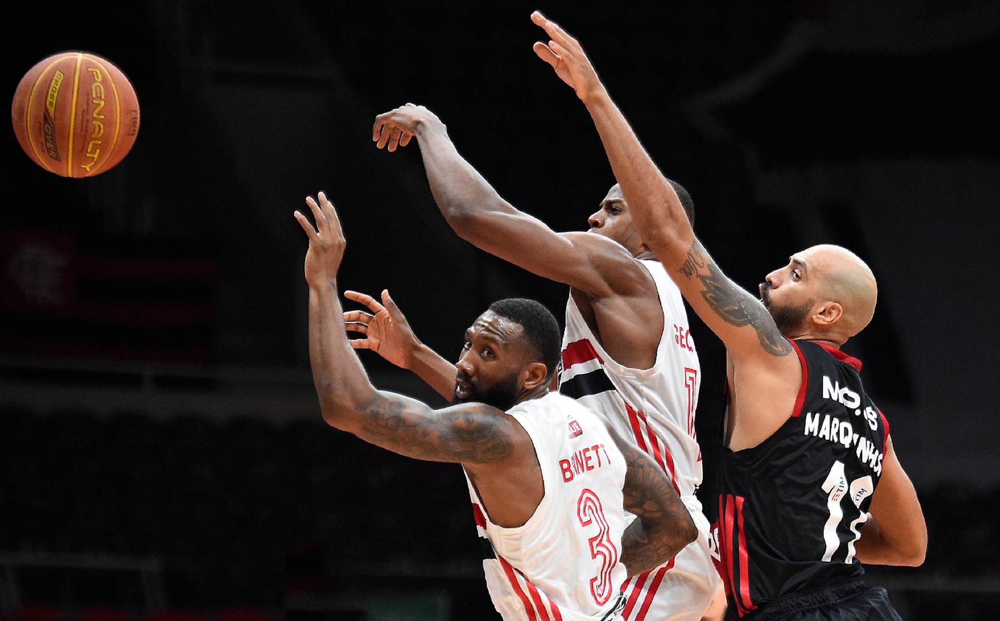 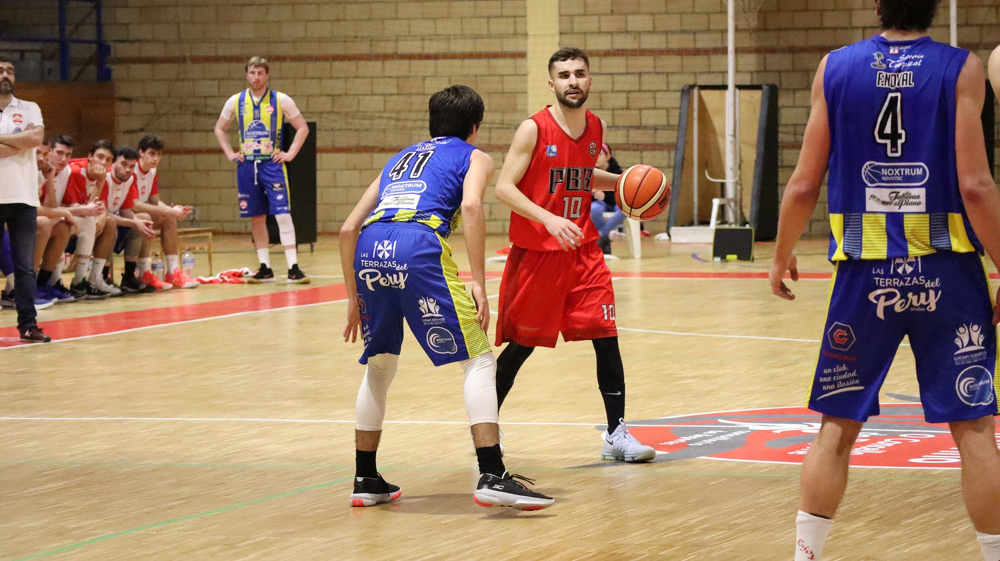Badminton
Bulu tangkis, atau yang lebih dikenal sebagai badminton, adalah olahraga yang populer di seluruh dunia, terkenal dengan kecepatan permainan dan keakuratan pukulan. Ini adalah olahraga raket tunggal atau ganda, di mana pemain atau pasangan pemain berusaha untuk memenangkan poin dengan memukul bulu ayam (shuttlecock) ke arah lawan, melewati jaring, dan jatuh di area lapangan lawan.
Permainan ini dimainkan di lapangan yang berukuran lebih kecil daripada lapangan tenis, dengan net yang dipasang di tengahnya. Pemain menggunakan raket untuk memukul shuttlecock ke arah lawan, dengan tujuan mencetak poin dengan mendaratkan shuttlecock di lapangan lawan atau membuat lawan melakukan kesalahan.
Gallery
Berikut adalah foto dan video dari UKM Badminton
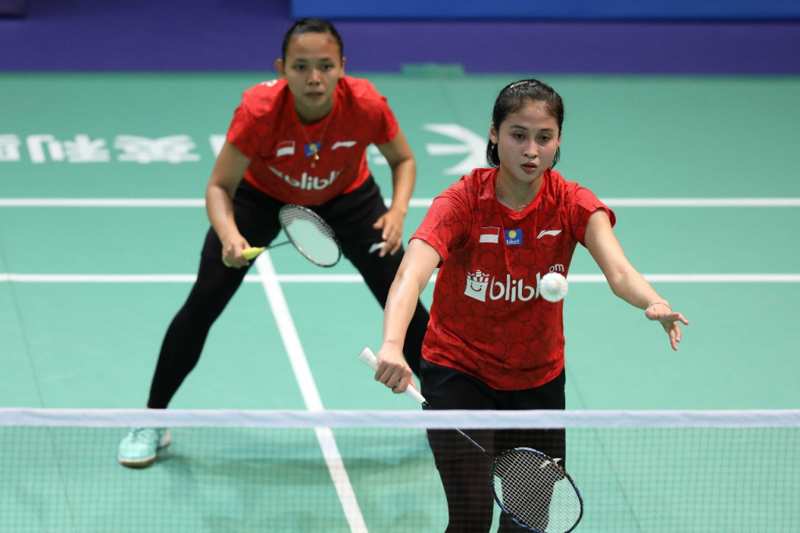 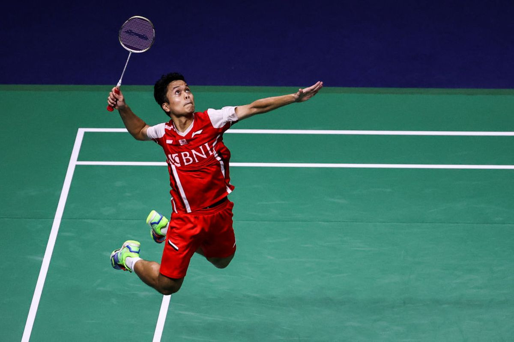 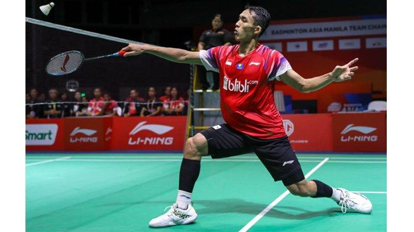Karate
Karate adalah seni bela diri yang berasal dari Jepang, dikenal karena teknik-tekniknya yang kuat, elegan, dan efektif. Karate menggunakan gerakan tubuh dan teknik serangan dan pertahanan untuk melatih fisik, mental, dan spiritual para praktisi.
Dalam latihan karate, para praktisi, yang disebut karateka, mempelajari berbagai gerakan dasar seperti pukulan, tendangan, dan blokade, serta teknik-teknik kompleks yang dirancang untuk menanggapi berbagai situasi pertempuran. Latihan juga sering mencakup kihon (teknik dasar), kata (urutan gerakan yang dipraktikkan sendiri), dan kumite (latihan bertarung dengan rekan latihan).
Gallery
Berikut adalah foto dan video dari UKM Karate
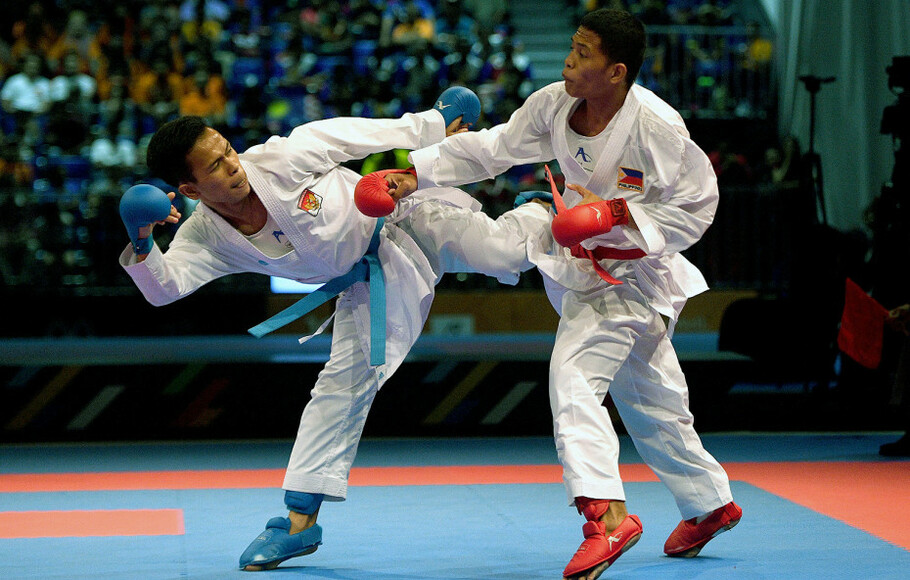 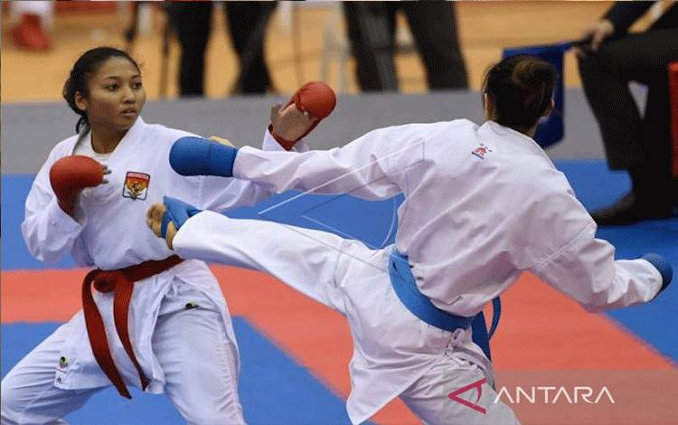 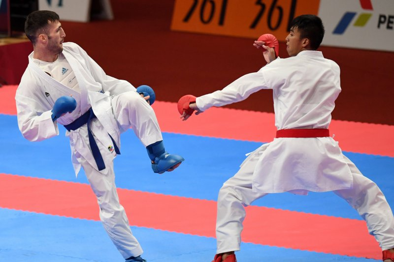Sepak-Bola
Sepak bola, atau yang sering disebut sebagai olahraga "The Beautiful Game", adalah olahraga tim yang dimainkan oleh dua tim beranggotakan sebelas pemain masing-masing, yang bertujuan untuk mencetak gol dengan mengoper bola ke gawang lawan. Ini adalah olahraga yang sangat populer di seluruh dunia, menarik jutaan penggemar dan pemain dari berbagai latar belakang dan budaya.
Permainan ini dimainkan di lapangan rumput yang luas dengan dua gawang di setiap ujungnya. Pemain menggunakan kaki mereka untuk mengoper dan mengontrol bola, dengan tujuan mencetak gol dengan melempar bola ke gawang lawan menggunakan kaki atau bagian tubuh lainnya.
Gallery
Berikut adalah foto dan video dari UKM Sepak-Bola
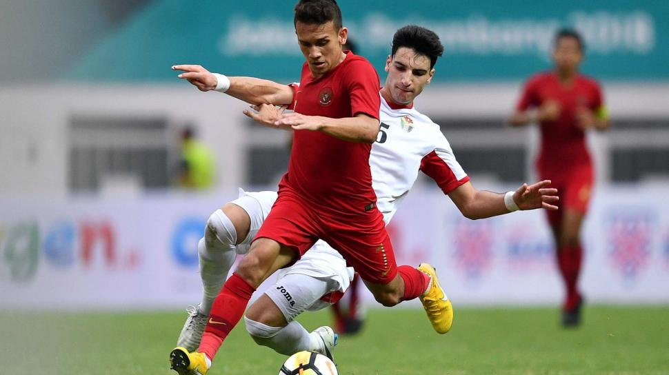 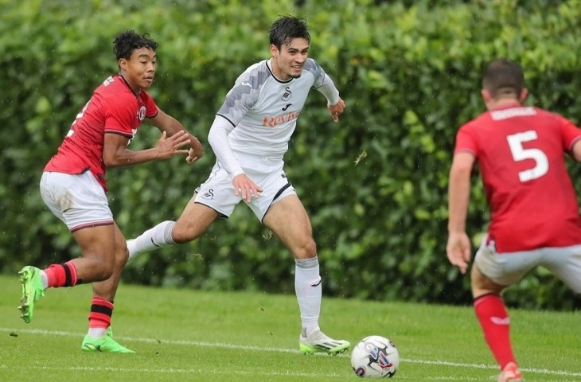
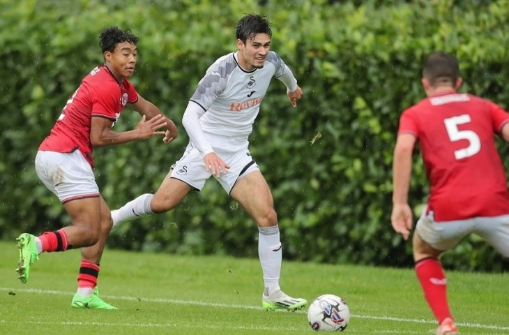